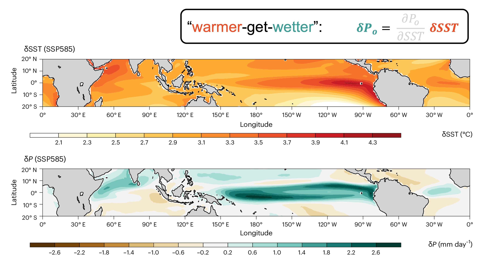
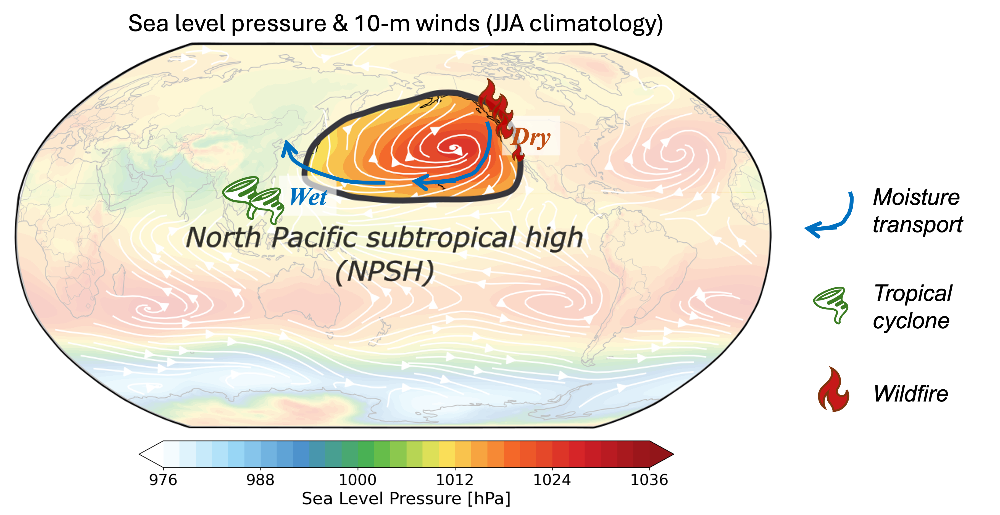

A Tale of Precipitation and Sea Surface Temperature
Precipitation is a central component of Earth's climate system, not only part of the water cycle, but also an orchestrator of interactions among the ocean, atmosphere, and land. Warm ocean surfaces intensify precipitation, releasing latent heat that modulates atmospheric circulation. Changes in circulation further influence climate and weather worldwide, from enhanced winter rainfall along the U.S. West Coast during El Niño events to the 2010 Russian heatwave driven by persistent high-pressure systems.
Accurately representing these interactions in climate models is crucial for credible long-term climate projections and accurate forecasts of weather and extreme events. This research theme combines theory, statistical analysis, and numerical modeling to understand the complex two-way interactions between precipitation and sea surface temperature (SST), and how regional hydroclimate responses to anthropogenic forcing can influence global climate.
How land precipitation contributes to SST pattern formation

Changes in SST across the Pacific are highly inhomogeneous despite global-mean warming under increasing CO2. For example, observations over recent decades show a broad cooling trend in the subtropical Southeast Pacific that extends into the tropical Pacific. Patterns of SST change are conventionally viewed as the primary control on precipitation change.
In this study, we identify a previously overlooked role for the CO2-forced land precipitation response over South America in shaping SST patterns. By inducing remote circulation changes that strengthen subtropical Pacific surface winds, this precipitation response enhances wind-driven evaporative cooling and promotes regional SST cooling in the subtropical Pacific, resembling the observed trends.
(preprint available upon request)
Precipitation sensitivity to SST and its remote impact

Tropical oceans affect global climate mainly because latent heating from tropical precipitation influences the generation and propagation of planetary waves. The remote impact of tropical oceans therefore depends on both the location and intensity of precipitation. As the climate warms, tropical mean precipitation is expected to increase, but it remains unclear whether different tropical basins will experience precipitation changes in the same way.
Our research shows that the impact of sea surface warming on precipitation differs greatly among the three tropical basins, with the tropical Pacific experiencing much larger rainfall changes and higher hydrological sensitivity than the other two basins. Because the tropical basins warm at approximately the same rate, this interbasin difference in hydrological sensitivity implies a substantial redistribution of precipitation-induced diabatic heating among tropical basins.
Through numerical experiments with perturbed diabatic heating, we demonstrate that diverging basin hydrological sensitivity significantly affects precipitation and surface temperature over tropical and midlatitude land by modulating large-scale atmospheric circulation patterns.
Tropical origins of North Pacific subtropical high uncertainty

The North Pacific Subtropical High (NPSH) is a semi-permanent high-pressure system over the subtropical North Pacific. Variability in the summer NPSH strongly affects the East Asian monsoon and typhoons, as well as the hydroclimate of California. However, future projections of the NPSH from state-of-the-art climate models remain highly uncertain.
By evaluating how individual models deviate from the multi-model mean at different locations, we identify four hotspots of high uncertainty in future NPSH projections. Our analysis shows that the primary source of model variance in NPSH changes comes from tropical precipitation, including both SST-driven and SST-independent components. Through numerical experiments, we further demonstrate that tropical precipitation influences the NPSH remotely through atmospheric wave propagation.